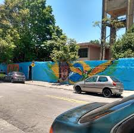

Interclasse, Festa Junina, e mais: O que teremos nesse mês de junho na E.E Prof Antônio José Leite.

📸: Facebook José Leite
Interclasse, Festa Junina, e mais: O que teremos nesse mês de junho na E.E Prof Antônio José Leite.
O mês de junho, que antecede as férias, será com muitos eventos em nossa escola, incluindo um dos eventos mais esperados do ano pelos nossos alunos: o interclasse.
Os compromissos da escola serão todos na última semana do mês seis (Junho), começando então pela amostra pedagógica.
22/06- Amostra Pedagógica: Poderemos apresentar tudo o que aprendemos nesse primeiro semestre em nossa escola e dividirmos os aprendizados uns com os outros.
23/06- Prova SARESP para 3ºs anos: A tão famosa SARESP está se aproximando, então se preparem Terceirão.
24/06- Primeiro dia de Interclasse: Dia com muitos jogos, diversão, torcida e as rivalidades sala contra sala.
25/06- Segundo dia de Interclasse: Mais um dia de jogos. Tenham foco jogadores, pois só está começando.
26/06- Festa Junina: E para fechar com chave de ouro, nossa Festa Junina também está chegando. Já separem suas roupas, pois está mais próximo do que imaginam.
A última semana de junho será muito movimentada e voltada com atividades para nossos alunos, venham e não deixem de participar.
Feito por: mahriios_